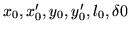
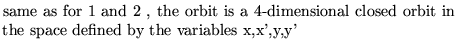
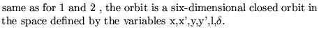
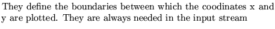
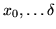
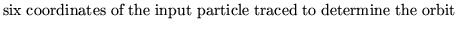
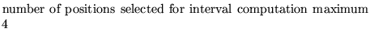
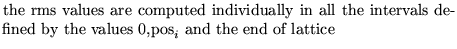
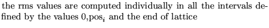

Input formatParameter definitions
REFErence ........(maximum 80 characters)
nprint sizex sizey

nposfor i from 1 to npos.
nprint controls display
1 a printout is provided
2 a printer-plot is provided
11,12 
21,22 
sizex,sizey 
.
 
.
npos 
.
 

Examples
The example comes from dem06.
REFERENCE ORBIT 12 0.0100 0.0100 0 0 0 0 0 0.00 0,